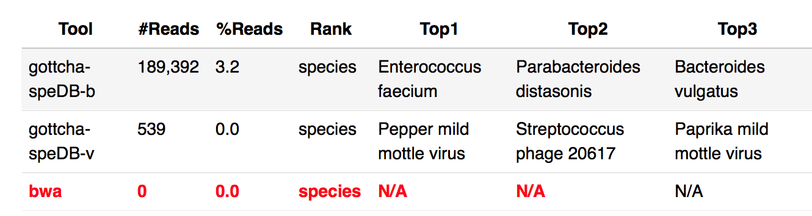
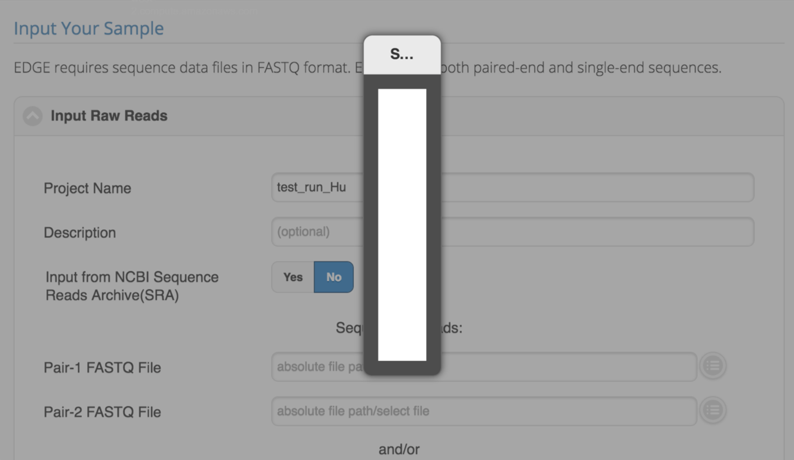
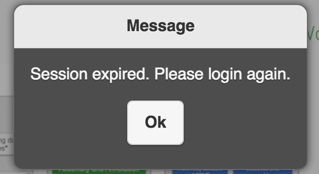

10. FAQs and Troubleshooting¶
10.1. FAQs¶
Can I speed up the process?
You may increase the number of CPUs to be used from the “additional options” of the input section. The default and minimum value is one-eighth of total number of server CPUs.
There is no enough disk space for storing projects data. How do I do?
There is an archive project action which will move the whole project directory to the directory path configured in the $EDGE_HOME/sys.properties. We also recommend a symbolic link for the $EDGE_HOME/edge_ui/EDGE_input/public/ directory which points to the location where the users’ (or sequencing centers’) raw data are stored, obviating unnecessary data transfer via web protocol and saving local storage.
How to decide various QC parameters?
The default parameters should be sufficient for most cases. However, if you have very depth coverage of the sequencing data, you may increase the trim quality level and average quality cutoff to only use high quality data.
How to set K-mer size for IDBA_UD assembly?
By default, it starts from kmer=31 and iterative step by adding 20 to maximum kmer=121. Larger K-mers would have higher rate of uniqueness in the genome and would make the graph simpler, but it requires deep sequencing depth and longer read length to guarantee the overlap at any genomic location and it is much more sensitive to sequencing errors and heterozygosity. Professor Titus Brown has a good blog on general k-mer size discussion.
How many reference genomes for Reference-Based Analysis and Phylogenetic Analysis can be used from the EDGE GUI?
The default maximum is 20 and there is a minimum 3 genomes criteria for the Phylogenetic Analysis. But it can be configured when installing EDGE.
Which aligner should I choose?
We use default setting of the aligner. Bowtie2 default is for global alignment and BWA mem algorithm will do local alignment. If users would like to overwrite the setting, users can use “Aligner Options” to do so. For example, use “–local” to run bowtie2 with local alignment mode. Or, use “-x ont2d” to run BWA mem with Nanopore reads.
How to make an app icon on the mobile device?

Launch the Safari browser on Apple’s iOS and navigate to the https://bioedge.lanl.gov/edge_ui/ or your EDGE instance website. (Please refresh the page few times to update the cache) Tap the Share button on the browser’s toolbar — that’s the rectangle with an arrow pointing upward. It’s on the bar at the top of the screen on an iPad, and on the bar at the bottom of the screen on an iPhone or iPod Touch. Tap the Add to Home Screen icon in the Share menu.

Launch Chrome for Android and open the https://bioedge.lanl.gov/edge_ui/ or your EDGE instance website. (Please refresh the page few times to update the cache) Tap the menu button and tap Add to homescreen. You’ll be able to enter a name for the shortcut and then Chrome will add it to your home screen. Alternatively, we have bioedge Web App as APK file to download and install in your android device too. You can download by scan the QR code below.
Why a job is queued and never autostarted?
The queued job had too much CPUs request. The autorun feature will start running queued job when there is available CPU resource. The queued job CPUs usage plus running jobs CPUs usage should be less than (<) edgeui_tol_cpu configured in the $EDGE_HOME/edge_ui/sys.properties.
Why some of the taxonomy profiling result are N.A.?
Please check the log file to give us more information. For above example on BWA result, at web UI, you can open log file by Clicking the link next to “Output Directory” at “General” section -> ReadsBasedAnalysis -> Taxonomy -> log -> allReads-bwa.log.
In this case, it is out of memory. EDGE requires at least 16G memory. see System requirements
For machine with < 32Gb memory, we suggest to use the smaller BWA index (~13Gb) and contains the databases for bwa taxonomic identification pipeline
wget -c https://bioedge.lanl.gov/resource/dev/edge_dev_bwa_mini_index.tgz
{kind=link}
{kind=link}
10.2. Troubleshooting¶
- Process.log and error.log files may help on the troubleshooting.
10.2.1. EDGE WEB GUI¶
In the GUI, if you are trying to enter information into a specific field and it is grayed out or won’t let you, try refreshing the page by clicking the icon in the right top of the browser window.
After installation, I can login but cannot select any files for input. the selection pop-up is empty.
This could be the permission issue on the EDGE_input/EDGE_output directory for Apache user. Please see Apache Web Server Configuration
I can not login to EDGE, it keeps saying Session expired.
The login session will expire in 12 hours. If you keeps get session expired message. It may indicate the ‘/’ (root) space is full. Please try to clean up log files or others you/admins can delete. For example, /var/log/message-2016xxxx is the archived log rotations which can be deleted for the space.
{kind=link}
{kind=link}
10.2.2. Coverage Issues¶
- Average Fold Coverage reported in the HTML output and by the output tables generated in {output directory}/AssemblyBasedAnalysis/ReadsMappingToContigs/ are calculated with mpileup using the default options for metagenomes. These settings discount reads that are unpaired within a contig or with an insert size out of the expected bounds. This will result in an underreporting of the average fold coverage based on the generated BAM file, but one that the team feels is more accurate given the intended use of this environment.
10.2.3. Data Migration¶
- The preferred method of transferring data to the EDGE appliance is via SFTP. Using an SFTP client such as FileZilla, connect to port 22 using your system’s username and password.
- In the case of very large transfers, you may wish to use a USB hard drive or thumb drive.
- If the data is being transferred from another LINUX machine, the server will recognize partitions that use the FAT, ext2, ext3, or ext4 filesystems.
- If the data is being transferred from a Windows machine, the partition may use the NTFS filesystem. If this is the case, the drive will not be recognized until you follow these instructions:
- Open the command line interface by clicking the Applications menu in the top left corner (or use SSH to connect to the system).
- Enter the command: ‘’sudo yum install ntfs-3g ntfs-3g-devel -y’‘
- Enter your password if required.
- After a reboot, you should be able to connect your Windows hard drive to the system, and it will mount like a normal disk.
10.2.4. Known Issues¶
- Installations on CentOS 6.4 with Apache 2.2 are known to have difficulty executing jobs that have “.real” anywhere in the name. This is due to a CGI execution issue. The recommended resolution is to use an underscore in place of the period, or simply name your job something else.
10.3. Discussions / Bugs Reporting¶
We have created a mailing list for EDGE users. If you would like to recieve notifications about the updates and join the discussion, please join the mailing list by becoming the member of edge-users groups.
We appreciate any feedback or concerns you may have about EDGE. If you encounter any bugs, you can report them to our GitHub issue tracker.
Any other questions? You are welcome to Contact Us and Citation